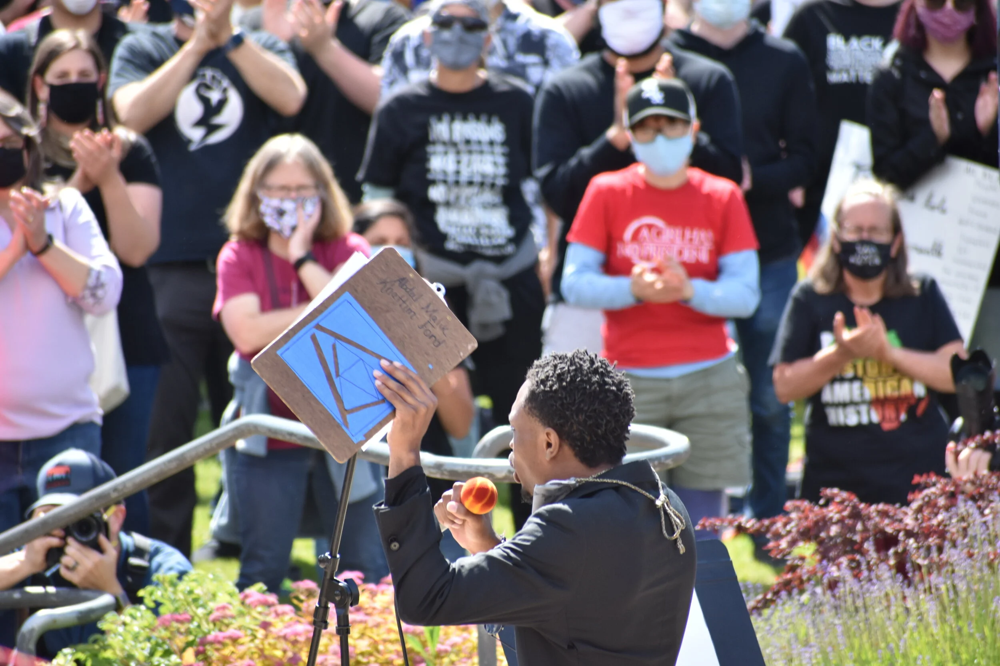

June 6, 2020

An inclusive community gathering where over 5,000 participants assembled to protest systemic injustice. The event centered on perspectives from people of color who spoke about racial violence and oppression.
Organizers connected George Floyd's death to a broader historical pattern of violence against Black Americans, referencing numerous victims including Ahmaud Arbery, Breonna Taylor, Eric Garner, and Sandra Bland, tracing this violence back to slavery's origins in 1619.